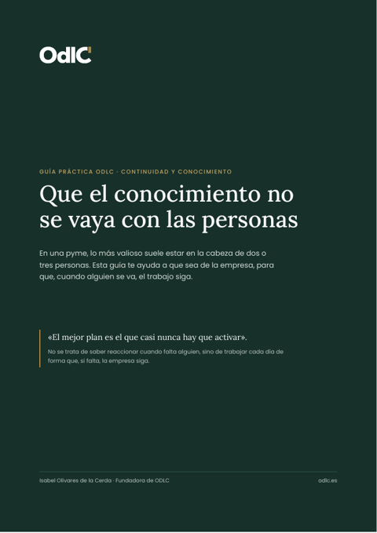

Recursos gratuitos
Herramientas gratuitas para cada fase del recorrido
Las mismas cuatro fases con las que trabajamos en OdlC, con herramientas y guías que puede usar hoy, sin coste y sin registro. Empiece por la fase en la que está su empresa.
Mapa de empresa
Responda 21 preguntas de sí o no y obtenga, en diez minutos, el mapa de su empresa: un semáforo de nueve bloques y sus cinco prioridades, listo para guardar en PDF. Sin registro y sin instalar nada.
- Estructura, gobierno y firmas, bancos, calendario de obligaciones, documentación, cumplimiento y seguros, conocimiento crítico, accesos y copias, y asesores.
- Todo se calcula en su navegador: no se envía ni se guarda nada.
El mapa es una herramienta de orden, no asesoramiento jurídico. Lo que salga en rojo, revíselo con su asesor o con ODLC en una sesión gratuita.
La misma herramienta como skill para Claude: le entrevista conversando y entra en más detalle. Descargar la skill (ZIP).
- Descargue el archivo ZIP. No lo descomprima.
- En Claude (planes Pro, Max, Team o Enterprise), active la ejecución de código y la creación de archivos en los ajustes.
- Vaya al apartado Skills de los ajustes, pulse para añadir una skill y suba el ZIP.
- Abra una conversación y escriba: «Quiero hacer el mapa de mi empresa».
Los menús de Claude pueden cambiar. Si no encuentra el apartado, siga la ayuda oficial de Claude sobre skills.
2 · Decidir
Diseño y constitución
Decidir cómo se monta o se reorganiza: socios, administradores, estatutos y pacto. Ver la fase decidir.
¿Hacerlo usted, contratar a alguien o con OdlC?
Antes de constituir o de poner en marcha la empresa, la calculadora compara lo que le cuesta cada camino en dinero y en horas: hacerlo usted, contratar a un interim que lo dirija o hacerlo con OdlC. Puede cambiar los supuestos para ajustarlos a su caso.
Cuatro meses de puesta en marcha y su hora a 90 €: hacerlo con OdlC cuesta 6.100 € menos que hacerlo usted y le deja 120 horas libres para su negocio.
3 · Liderar
Puesta en marcha
Poner la empresa a funcionar: identidad corporativa, web, oficina, tecnología y equipo. Ver la fase liderar.
Próximamente, nuevas herramientas para esta fase.
4 · Consolidar
Orden continuo
Mantener el orden cada año y que la empresa no dependa de una sola persona. Ver la fase consolidar.

Que el conocimiento no se vaya con las personas
En una pyme, lo más valioso suele estar en la cabeza de dos o tres personas. Esta guía ayuda a que sea de la empresa, para que, cuando alguien se va, el trabajo siga.
- Un test de cinco preguntas para saber cuánto depende su empresa de una sola persona.
- El mapa del conocimiento crítico, en verde, ámbar y rojo.
- Seis problemas reales y seis soluciones para poner en marcha esta semana.
- El calendario del traspaso cuando alguien se va, del mes anterior al día siguiente.
- Su plan en una página, para rellenar en una reunión de una hora.
Sigue el esquema de la ISO 30401, la norma internacional de gestión del conocimiento, e incluye lo que falta para certificarse.
Lista rápida
«Está todo en la nube»: la copia que de verdad le salva
Microsoft y Google protegen muy bien sus servidores, pero lo que pasa dentro de su cuenta es responsabilidad de su empresa. Si un virus cifra un portátil sincronizado, la nube guarda la versión cifrada.
Una copia en discos duros
Además de la nube, una copia completa de los datos de la empresa, con fecha y responsable.
Fuera del ordenador y de la oficina
El disco se desconecta al terminar y se guarda fuera de la oficina. Lo que no está conectado no se puede cifrar.
Probar que se puede restaurar
Una copia que nunca se ha restaurado es solo una suposición. Apunte la fecha de la última prueba.
Los accesos y el segundo administrador de los sistemas están en el punto 02 de la guía de continuidad. Y para el uso de la IA con los datos de la empresa: IA en la empresa con los datos protegidos.
¿Quiere revisar cómo está su empresa?
En 30 minutos y sin coste le decimos por dónde empezar. Después le enviamos una propuesta por escrito, con alcance, calendario y precio.